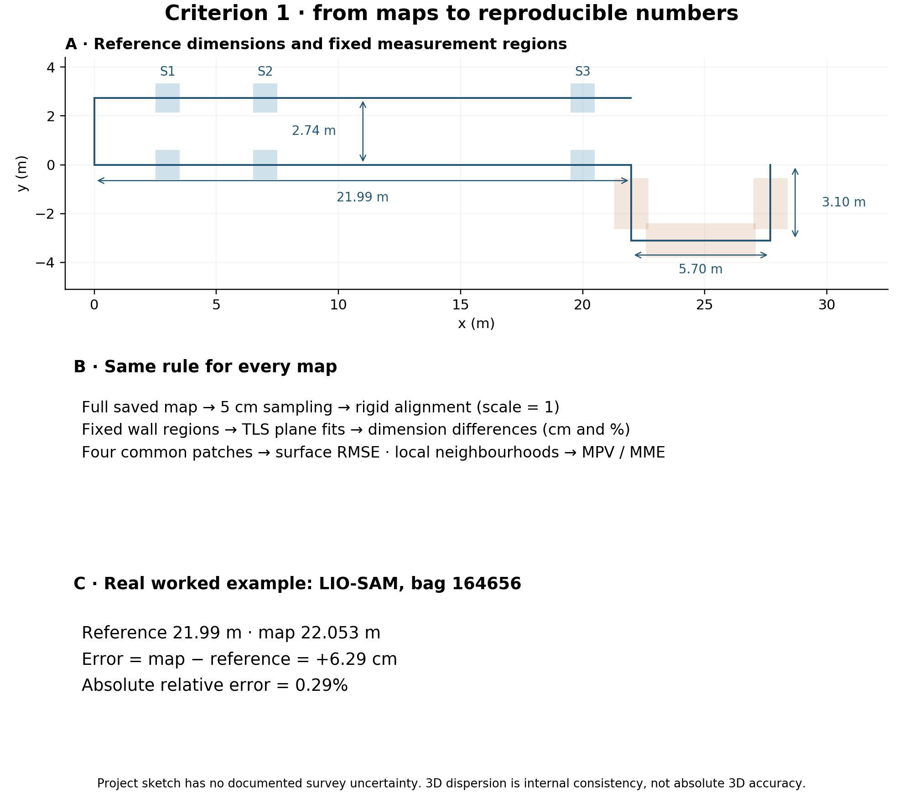
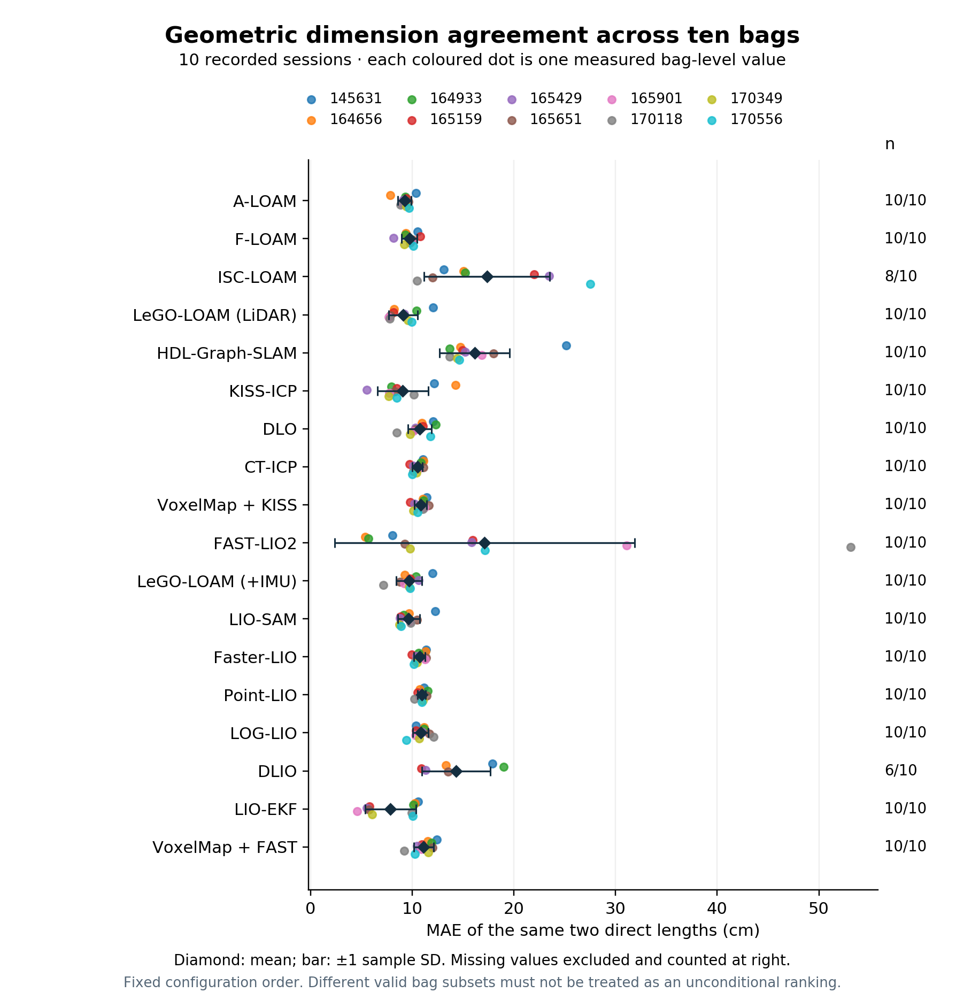
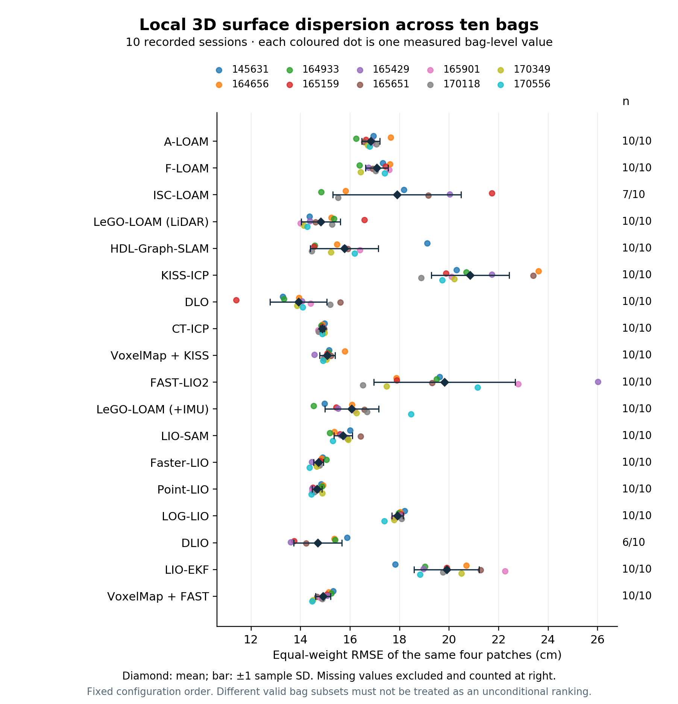

Map và mặt tham chiếu
Mười bag của cấu hình đang chọn
Mỗi chấm là MAE đo được từ một bag, đơn vị cm. Đây không phải điểm chấm chủ quan. Bag thiếu một trong hai chiều dài lõi được để trống.
| Bag | MAE (cm) | RMSE mặt (cm) | Đủ đo |
|---|
Đối chiếu từng kích thước
| Phép đo | Chuẩn (m) | Map (m) | Lệch (cm) | |Lệch| (%) | Trạng thái |
|---|
Dài thẳng và rộng nhánh là hai chiều dài cố định để tính MAE. Ba bề rộng hành lang được báo riêng. Tọa độ mặt lưng nhánh phụ thuộc mốc căn, chỉ dùng chẩn đoán; không tính vào MAE. Không thay kích thước thiếu bằng 0 và không lấy trung bình những tập kích thước khác nhau.
Phương pháp và giới hạn của phép đo
Độ phù hợp kích thước
Cloud được quay và tịnh tiến một lần, không co giãn. Các mặt tường được khớp TLS trong cùng hộp đo. Sai lệch = kích thước map − kích thước sơ đồ; MAE là trung bình trị tuyệt đối của hai sai lệch chiều dài trực tiếp.
Sơ đồ cũ: rộng 2,74 m; dài thẳng 21,99 m; nhánh rộng 5,70 m và sâu 3,10 m. Hồ sơ độ không đảm bảo đo của sơ đồ chưa có; đây là độ phù hợp với kích thước dự án.
Nhất quán bề mặt 3D
RMSE đo khoảng cách trực giao tới mặt phẳng khớp, trên toàn bộ điểm của hộp. MPV lấy Q75 khoảng cách tuyệt đối trong mỗi lân cận rồi trung bình. MME dùng entropy Gaussian từ hiệp phương sai mẫu, tọa độ mét. Cả hai báo ở r = 0,3 và 0,6 m, tối thiểu 10 điểm/lân cận.
Map sai hoặc quá thưa vẫn có thể cho MPV/MME nhỏ. Phải đọc cùng hình dạng toàn map, sai lệch kích thước và tỷ lệ lân cận đủ dữ liệu. Không dùng chúng để tuyên bố sai số vị trí 3D tuyệt đối.
Căn cứ khoa học
Li và cộng sự (2025): đối chiếu kích thước vật thể phẳng với thước đo, Bảng 4; đánh giá RMSE mặt phẳng, Hình 14.
Razlaw và cộng sự (2015): định nghĩa MPV/MME, mục IV; giới hạn khi map sai toàn cục, mục V-C.
MapEval (RA-L 2025): phân biệt độ chính xác hình học toàn cục và tính nhất quán cấu trúc cục bộ. Bộ này không tính AWD/SCS hoặc sai số cloud-to-cloud với GT 3D.
Điều chỉnh của thí nghiệm
Bán kính chính 0,6 m là điều chỉnh cho map 16 tia thưa; bài gốc dùng 0,3 m. Vùng đo, ngưỡng hỗ trợ, giới hạn 4.000 điểm truy vấn và phép kiểm tra độ nhạy được công bố trong protocol.
10 bag là 10 phiên thu trong cùng hành lang, không phải 10 môi trường hoặc 10 lần đi hoàn toàn giống nhau. So hai cấu hình dùng cùng bag và cùng kích thước đủ hỗ trợ.

Bảng tổng hợp và tải dữ liệu kiểm chứng
PCD trên trang là tập điểm rút gọn để hiển thị, không phải cloud đầy đủ dùng tính số đo. Bag cảm biến gốc và cloud đầy đủ được lưu tại máy thực nghiệm; chưa phát hành công khai trong bộ xem này.

